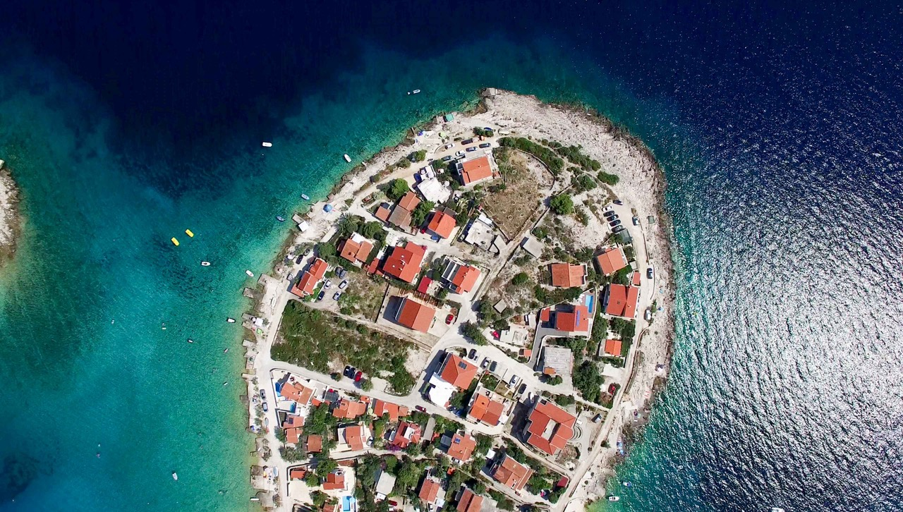
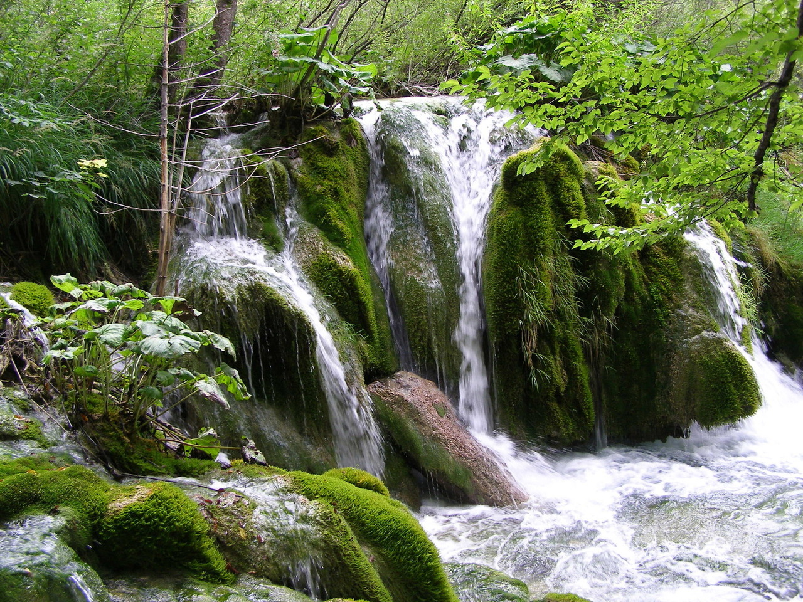
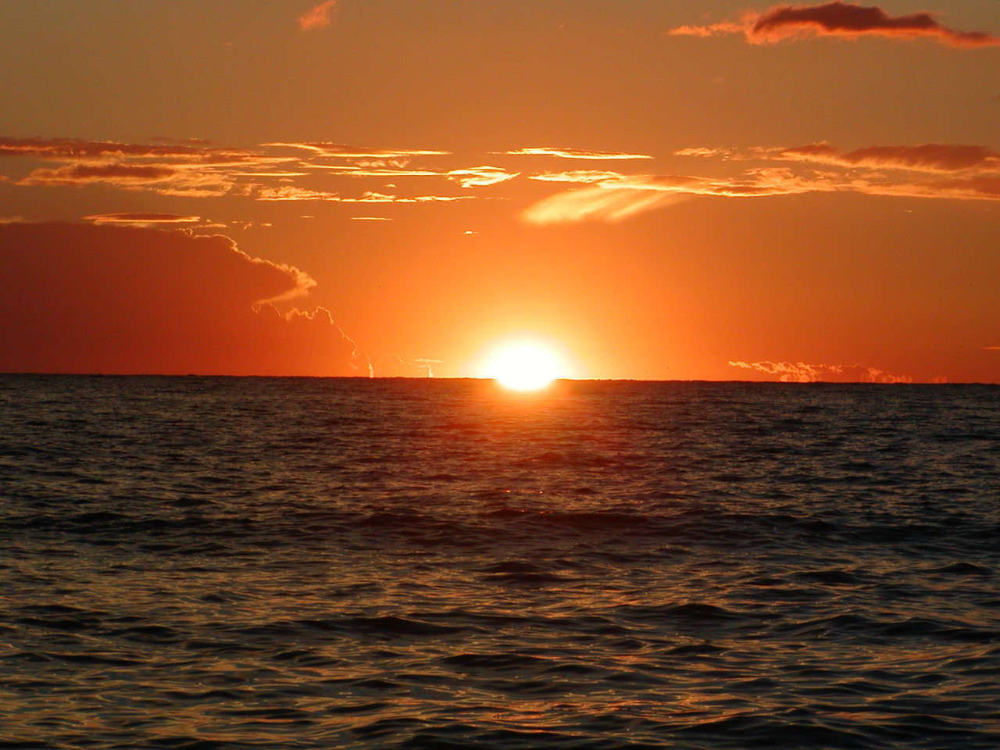
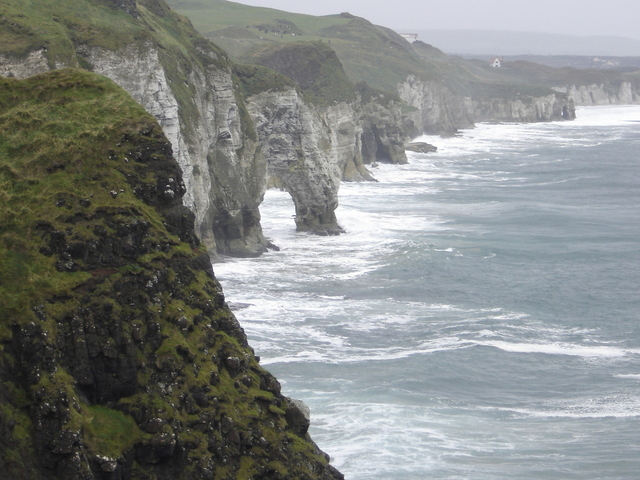
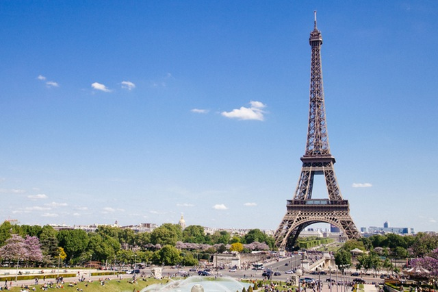
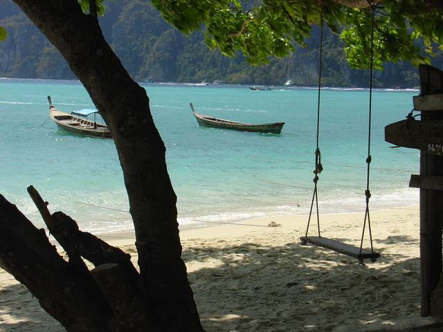
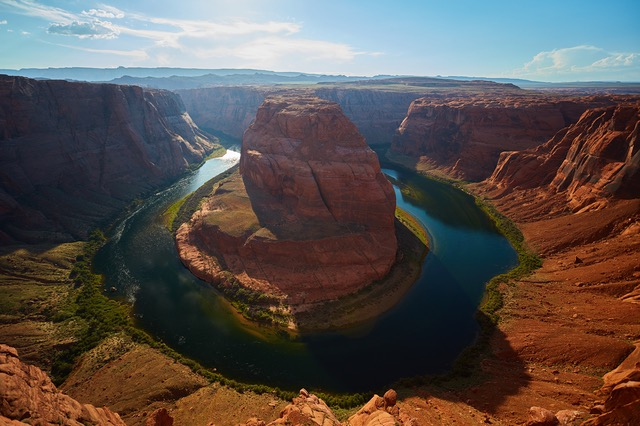
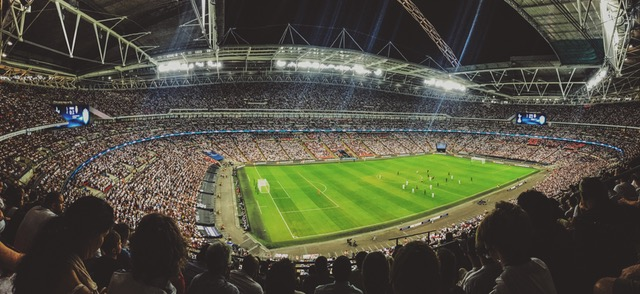

Nazovite nas ! 091/2222-222 | kontakt@noa.hr
"Uvijek biraj put koji ti izgleda najbolji, koliko god bio težak. Zahvaljujući navici ubrzo će postati lagan i ugodan."
Hrvatska
Povijest turizma u Hrvatskoj seže do sredine 19. stoljeća u razdoblje oko 1850. godine. Uspješno se razvijao sve do današnjih dana, a danas je Hrvatska jedno od najposjećenijih i najvažnijih turističkih odredišta Sredozemlja. Stoga „NOA“ turistička agencija organizira jako puno putovanja diljem cijele Hrvatske tokom cijele godine. Lonely Planet je Hrvatsku proglasio najboljom turističkom destinacijom 2005. godine, dok je Magazin National Geographic Adventure Hrvatsku proglasio najboljom destinacijom za 2006. godinu. Svaka hrvatska turistička regija posebno razvija svoju ponudu koja karakterizira njeno okružje. Najznačajnije hrvatske turističke regije su Istra, Kvarner, Dalmacija, Dubrovnik zajedno s otocima južnog Jadrana, Konavlima, Župom dubrovačkom, Dubrovačkim primorjem, Pelješcom te Zagreb i kontinentalna Hrvatska.
Prirodne ljepote
Hrvatska obiluje prirodnima ljepotama, otocima kojih je 1244, nacionalnim parkovima, parkovima prirode, spomenicima pod zaštitom UNESCO-a poput Dioklecijanove palače u Splitu, gradova Trogira i Dubrovnika, Eufrazijeve bazilike u Poreču i Katedrale svetog Jakova u Šibeniku, a najveća prednost u odnosu na konkurenciju je hrvatski dio Jadranskog mora koji je prema istraživanju Europske agencije za okoliš, provedenom 2010. godine, drugo najčišće more u Europi. Blaga Mediteranska klima u Hrvatskoj, s toplim ljetom i umjereno hladnom zimom, pogoduje hrvatskom turizmu i njegovom dodatnom razvoju. Turistička ponuda „NOA“ turističke agencije vrlo je raznolika a sastoji se od nautičkog, izletničkog, ronilačkog, kongresnog, kulturnog, ekološkog, seoskog, vjerskog, pustolovnog, zdravstvenog, lovnog ili ribolovnog turizma . U turističkoj ponudi su i višednevna krstarenja na motornim jedrenjacima te vrlo dobro razvijeni naturizam i sve razvijeniji Robinzonski turizam koji osim na kopnu nudi i boravak na usamljenim svjetionicima poput dubrovačkih Grebena ili Palagruže.
Smještajni kapacitet
U Hrvatskoj je 16. siječnja 2014. godine, prema podacima Ministarstva turizma, bio 851 kategorizirani turistički objekt, od čega je 605 hotela, 84 kampa, 52 turistička apartmana, 41 turističko naselje, 19 apart-hotela i 50 marina. U svim ovim objektima nešto je više od 100 000 smještajnih jedinica i oko 237 000 stalnih kreveta. U 605 kategoriziranih hotela ukupno je 53 227 smještajnih jedinica i 102 430 kreveta, a među svim hotelima 301 je kategoriziran s tri zvjezdice, 192 s četiri, a pet zvjezdica ima 29 hotela. Tako da se nemorate brinuti jer Hrvatska i „NOA“ turistička agencija vam mogu pružiti odmor iz snova i to za sve vrste putnika i turista.
Croatia Full of life


VRH STRANICE
Europa
Turizam je jedna od najjačih gospodarskih grana Europe. Godišnje kroz Europu prođu milijuni i mlijuni turista u potrazi za zabavom, odmorom, pustolovinam i avanturama. Europa ili kako ga ljudi vole zvati „najstariji kontinent“ turistima nudi pregršt sadržaja i zato je jedna od najpoželjnijih destinacija svijeta. Na koju god stranu krenuli možete naći nešto interesantno. Na sjeveru na skandinavskom poluotoku možete uživati u Norveškoj razvedenoj obali i netaknutoj prirodi, a fjordovi koji predstavljaju osnovni element tako razvedene obale predstavljaju svojevrsni sinonim Norveške, kao i za Island i Švedsku. Vodimo vas na jedno od naših najdražih destinacija, na takozvani „zeleni otok“ Irsku. Iako će vas za vrijeme vašeg boravka u Irskoj gotovo sigurno okupati kiša, ništa se ne brinite jer sve to možete nadoknaditi sa prirodnim ljepotama koje vam pruža ta prekrasna zemlja, od kojih su najpoznatiji klifovi. Naravno tu su još i vrhunska piva i u svijetu posnati Irish whiskey. Kada ste već u blizini možete skoknuti i do susjednog malo večeg otoka, Velike Britanije.
Malo južnije :)
Ako krenemo malo južnije do Francuske, Njemačke, Španjolske, Portugala ili Italije to postaje pravi raj za turiste. Puno velikih gradova sa dugom povijesti i kulturom, ali isto tako i manjih prekrasnih odredišta koja će vam pružiti i odmor i zabavu.U ovom dijelu Europe poznata je vrhunska gastronomija tako da mogu uživati i vaši nepci. U ovom dijelu Europe će vam biti odlično tokom svih dvanaest mjeseci u godini, naravno jer će „NOA“ turistička agencija isplanirati prekrasno putovanje za vas. Također organiziramo putovanja u naše susjedne zemlje. Sarajevo je grad koji morate posjetiti u vašem životu i naravno probati prave ćevape. U Srbiji bi izdvoili Exit music festival koji se svake godine održava na Pedrovardin tvrđavi u Novom Sadu. Vodimo vas i do Crne Gore i Albanije gdje možete uživati u prekrasnim pješčanim plažama. Europsku ponudu putovanja možemo zaključiti sa Grčkom i njezinim brojnim otocima i plažama.

VRH STRANICE
Ostatak Svijeta
Ostatak naše prekrasne planete Zemlje. Do sada smo organizirali putovanja na sve kontinente osim na Antartiku, koju u skoroj budućnosti isto planiramo uvesti u našu ponudu. Dakle imamo turističke aranžmane za Aziju, Afriku, Australiju, Sjevernu i Južnu Ameriku.U daleku Aziju imamo česta putovanja i već uhodanu rutu po veličanstvenim divljinam i plažama Vijetnama, Kambođe, Laosa i Tajlanda. Ovakva putovanja traju između 30-45 dana u kojima se doista možete povezati sa lokalnim stanovništvom i upoznati se sa njihovom kulturom. Naravno idemo i u dvije najmnogoljudnije zemlje svijeta, Kinu i Indiju i u razgledavanje njihovih najznačajnijih i največih građevina, Kineski zid i Taj Mahal.
Na Afričkom kontinentu smo do sada organizirali dva putovanja, ali na ta dva smo najponosniji jer su bila humanitarnog značenja. Naime „NOA“ turistička agencija je od 2016 godine ponosni partner UNICEF-a i organiziramo putovanja za humanitarne radnike koji putuju u Afriku na par mjeseci i pritom pomažu djeci Afrike.
Australija i dvije Amerike
Australija je država koja zauzima kontinent Australiju, otok Tasmaniju i brojne manje otoke u Indijskom i Tihom oceanu na Zemljinoj južnoj polutki. Susjedne države su Indonezija, Istočni Timor i Papua Nova Gvineja na sjeveru, Solomonski otoci, Vanuatu i Nova Kaledonija na sjeveroistoku te Novi Zeland na jugoistoku.Na tom području ima preko 10.000 plaža pa je raj za kupače i surfere. Australija je poznata po mnogobrojnim nacionalnim parkovima i parkovima prirode kao što su Kakadu i Parnululu National Park.
Grand Canyon je najpoznatiji nacionalni park u Sjevernoj Americi i največi na svijetu, tako da je nezaobilazan za večinu turista koji se odluče za odmor u Sjevernoj Americi. Jedno od naših najpoznatijih putovanja je Grand Canyon – Las Vegas – Los Angeles. U Južnoj Americi organiziramo putovanja i razgledavanje gradova izumrlih civilizacija kao što su Maje i Azteci.Jedno od naših najzanimljivijh aranžmana u Južnoj Americi je zasigurno posjet Machu Pichu-u u Peruu.

VRH STRANICE
Sport
Za sada u našoj ponudi vezano za sport imamo odlazak na utrke Formule 1 i MotoGP, te odlazak na finala i polufinala lige prvaka. Prošle godine smo organizirali odlazak na VN Italije u Monzi pored Milana i povijesnu uličnu utrku po ulicama Monte Carla, VN Monaka. Ove godine vas vodimo na završnicu MotoGP-a u Španjolsku gdje se tradicionalno okupi preko 200.000 navijača. Već sedmu godinu zaredom organiziramo odlazak na završnicu najprestižnijeg klubskog nogometnog natjecanja, Ligu prvaka. Prošle godine smo bili u Milanu na obračunu gradskih rivala iz Madrida, Athletica i Reala.

VRH STRANICE